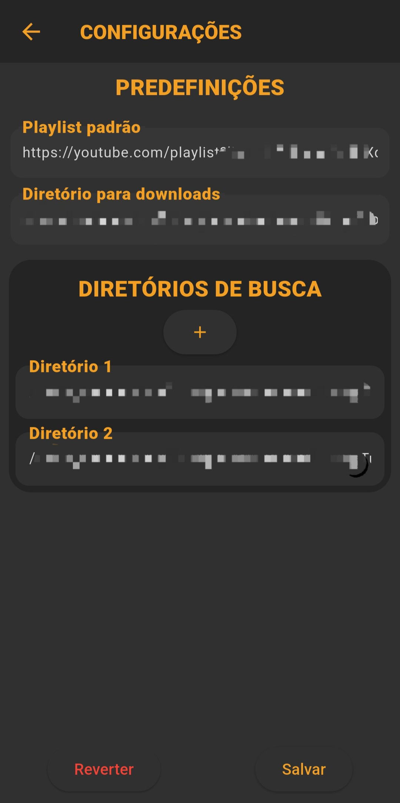
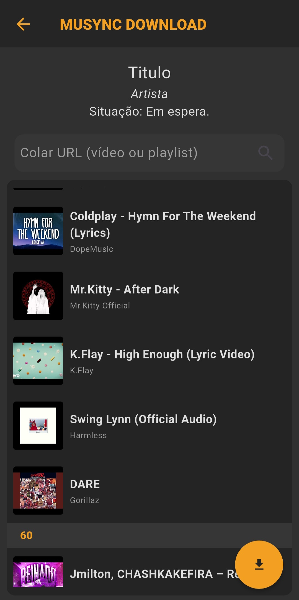

Documentação: Musync
Documentação: Musync
 Documentação: Musync
Documentação: Musync
Um aplicativo mobile com capacidade de organizar músicas locais, reproduzi-las, baixar e transferir as músicas entre plataformas.
Nessa tela vemos logo de cara nossa playlist principal.
A playlist principal por padrão é a "Todas" que exibe todos os arquivos de áudio encontradas pelo aplicativo, mas há a possibilidade de alterar para uma pasta em específico, ou uma playlist criada por você.
O botão superior com o icone ▶, serve como um backup, pois o app guarda a ultima playlist e música ouvida antes do app fechar.
Após clicar no botão, ou definir uma música como checkpoint, o status muda de 'ultima musica ouvida' para 'checkpoint marcado', alterando também o icone para algo parecido com ⊕.
Nesse estado o comportamento é praticamente o mesmo, ao clicar no botão, começa a tocar a música marcada com o checkpoint.


A tela de configurações possui:
Na tela de download, a playlist padrão é carregada permitindo a seleção de uma ou mais mídias para download via vídeos do YouTube.

Na tela de configurações são definidos:
Na tela de download, a playlist padrão é carregada permitindo a seleção de uma ou mais mídias para download via vídeos do YouTube.

Na tela de configurações são definidos:
Na tela de download, a playlist padrão é carregada permitindo a seleção de uma ou mais mídias para download via vídeos do YouTube.
git clone https://github.com/Ntzzn-Dev/Musync.git
cd musync_and flutter pub get flutter run
cd musync_dkt flutter pub get flutter run
Sinta-se à vontade para abrir issues ou sugerir melhorias!
Veja o changelog completo em CHANGELOG.md